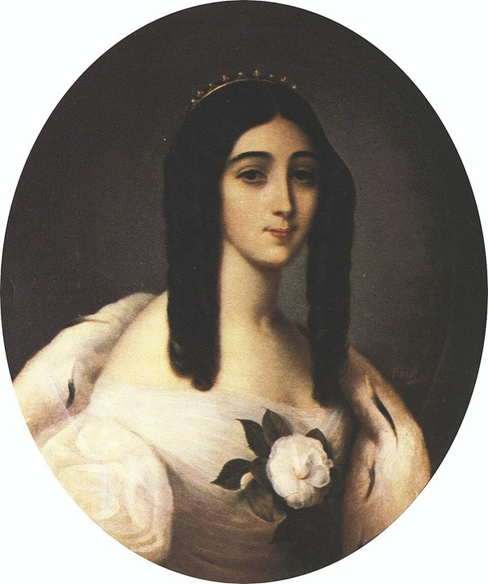
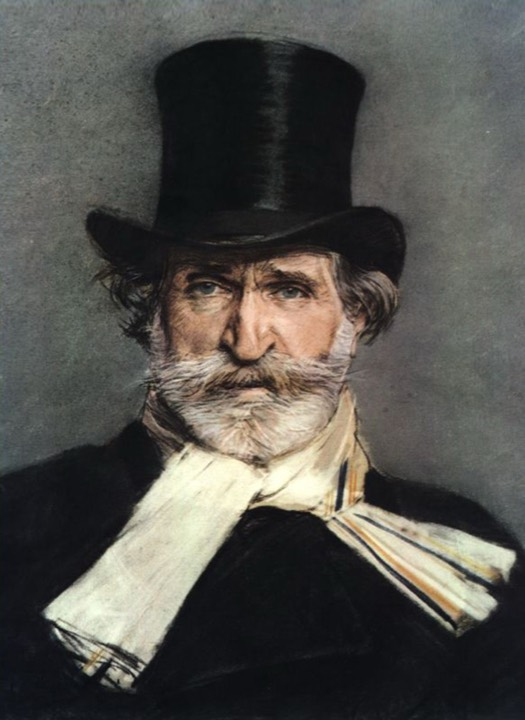
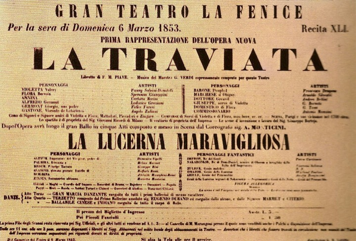
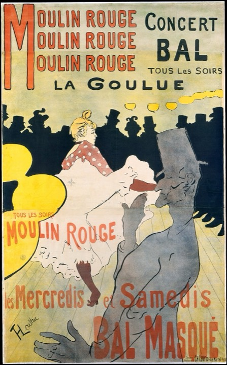
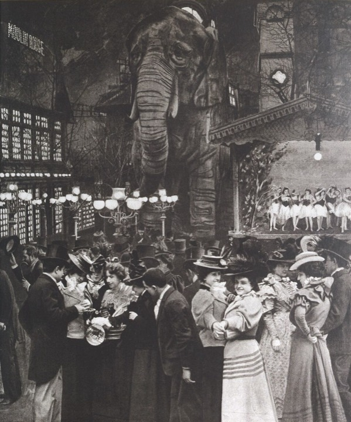
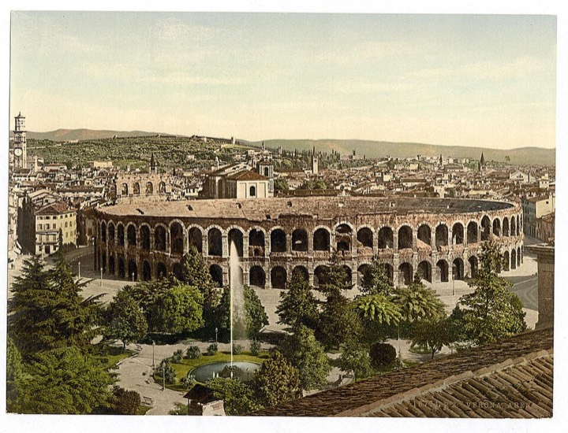

Thursday 9 July 2026 · curtain 21:15 · about 3 h with two intervals
Tonight's Company
ViolettaMartina Russomanno
AlfredoFrancesco Meli
GermontLudovic Tézier
ConductorMichele Spotti
DirectorPaul Curran
ProductionNew 2026 · Moulin Rouge
Part One
The story, before the lights dim
Paris, the 1850s. Violetta Valéry is the most dazzling party hostess in the city — a courtesan, meaning wealthy men pay for her company — and she is secretly very ill. At one of her glittering parties, a sincere young man named Alfredo tells her he's genuinely in love with her, not renting her attention. Against all her instincts, she believes him.
Then Alfredo's father arrives with a request that will test how far love can stretch: a sacrifice that will destroy her happiness to protect a family she's never met — and she must keep the reason secret. What follows is a public humiliation, a bitter misunderstanding, and a race against her failing health for the truth to come out. It's a story about a woman braver and more decent than the "respectable" society that scorns her — and about forgiveness that arrives almost, but not quite, too late.
La traviata literally means "the woman led astray." It's society's label for Violetta — and the opera spends three acts proving the label wrong.
Who's who
Violetta Valéry · sopranoThe heroine: a celebrated courtesan, dying of tuberculosis, who risks everything on real love. Her trademark is the camellia flower.
Alfredo Germont · tenorEarnest young man from a respectable family; sincerely loves Violetta but is quick to wounded pride — with catastrophic results.
Giorgio Germont · baritoneAlfredo's father and the story's engine. He demands Violetta's sacrifice — then comes to revere her. Not a villain; that's what makes it hurt.
Flora & the party set · mezzo & friendsFlora Bervoix hosts the fateful Act II party; Gastone makes the introduction; the Marquis spreads the gossip.
Baron Douphol · baritoneVioletta's wealthy "protector" and Alfredo's rival. Jealous, cold — and quick to demand a duel.
Annina & Doctor Grenvil · the loyal onesVioletta's devoted maid and her physician — the only people who never leave her side.
Act I
A party, a toast, a crack in the armor
Violetta's salon, Paris · champagne everywhere
Violetta is throwing one of her famous late-night parties, on the arm of her protector, Baron Douphol. Her friend Gastone introduces Alfredo — a young man who quietly adored her from afar, who even came to ask after her every day when she was ill (the Baron never bothered). Alfredo leads the toast: the famous drinking song, the one tune everyone already knows. When a coughing fit seizes Violetta, only Alfredo stays behind — and he tells her plainly that he has loved her for a year. She laughs it off; love isn't in her job description. But she gives him a camellia and tells him to bring it back when it has wilted. That means tomorrow.
Alone at the end of the act, she wonders — with real ache — whether this stranger might be the true love she's never allowed herself... then violently shakes it off and vows to stay free, living only for pleasure. From the street below, Alfredo's voice drifts up, singing about love. The armor has cracked, and she knows it.
Act II · scene 1
Paradise, interrupted by a polite man
A country house outside Paris, three months later
Violetta walked away from Paris, and the two have been blissfully playing house — funded, Alfredo discovers to his shame, by Violetta secretly selling her horses, carriages and jewels. While he rushes to Paris to raise money, his father Giorgio Germont arrives unannounced. He's come to end the affair: his daughter's engagement is threatened by the family scandal. He expects a gold-digger; he finds a woman of complete integrity who is paying for everything herself. He asks anyway.
Violetta protests that Alfredo is all she has — that she is dying — but Germont grinds her down. She agrees to give Alfredo up forever, asking only that one day, after her death, he learn the truth. She writes a cold farewell letter, and when Alfredo returns she nearly breaks — clinging to him with sudden desperate force: "Amami, Alfredo!" — love me as much as I love you — then flees. Reading her letter moments later, Alfredo assumes she's gone back to the Baron, spots an invitation to Flora's party, and storms off to Paris for revenge.
Act II · scene 2
The cruelest party in opera
Flora's mansion, that same night · masqueraders, gypsies & matadors
Alfredo plants himself at the card table and keeps winning — "unlucky in love, lucky at cards," he announces, loudly, as Violetta enters on the Baron's arm. She gets Alfredo alone and begs him to leave before there's a duel. He'll go only if she comes with him. Bound by her promise to his father, she can't explain — so she lies: she says she loves the Baron.
Alfredo explodes. He flings open the doors, summons the whole party, and hurls his winnings at Violetta's feet — publicly "paying her back." She collapses. The entire room turns on him in disgust, and his own father — the only person who knows the truth — publicly shames his son. The horror of the scene is that you know the truth too, and almost nobody on stage does. Verdi keeps the party music sparkling while the trap closes.
Act III
Too late — and just in time
Violetta's bedroom, months later · Carnival echoes from the street
The furniture is mostly sold. Violetta is dying, and she knows it — the doctor's bedside cheer doesn't fool her. She rereads a letter from Germont: the duel happened (the Baron survived, only wounded), Alfredo went abroad — and his father has finally told him the truth. Alfredo is coming to beg forgiveness. "It's late," she says, and bids farewell to her happy dreams.
Then Annina rushes in. Alfredo is here. The lovers fall into each other's arms and plan to leave Paris and start over — and for a moment, the music believes it. Her body doesn't. Germont arrives, remorseful, embracing her as a daughter: the acceptance she needed, arrived too late. Violetta gives Alfredo a portrait of herself, to give one day to the girl he'll marry. Then suddenly she rises — the pain is gone, life is returning, she cries — and dies in Alfredo's arms. That final surge of strength is a real, documented phenomenon in dying tuberculosis patients, and it will leave the whole amphitheater wrecked.
Part Two
What to listen for
You already know more of this music than you think. Here are the big moments in the order they'll happen tonight — and one melody to memorize early, because Verdi keeps bringing it back.
Before the curtain
Prelude — the ending, first
The orchestra tells you how the story ends before it begins: whisper-quiet, fragile high violins — Violetta's illness — then the cellos pour out a warm, descending love melody. Remember that tune: it's "Amami, Alfredo," and it will return at the opera's emotional breaking point (and, decades later, in Pretty Woman). Finally the same melody comes back dressed in glittering violin decoration: the party-girl surface laid over the real heart.
Act I
"Libiamo ne' lieti calici" — the Brindisi
The most famous drinking song ever written: an irresistible waltz over a bouncing oom-pah-pah, passed between Alfredo, Violetta and the whole party. Listen to it as a conversation — his verse is sincere, hers answers with the same tune but a cynic's words: enjoy the moment, love fades.
You know this one from roughly everywhere: Heineken built an ad campaign on it, it shows up in Frasier and countless films, and it was a Pavarotti signature encore.
Act I
"Un dì, felice" — memorize this melody
Alone with Violetta, Alfredo confesses a year of quiet love. Midway he lands on "Di quell'amor ch'è palpito" — a surging rise-and-fall phrase. This is the opera's love theme, and Verdi replants it at every crucial turn for the rest of the night. Violetta answers with laughing, fluttery ornaments: she deflects sincerity with sparkle — her entire character in one exchange.
Act I finale
"Ah, fors'è lui... Sempre libera"
Violetta's huge solo scene, alone after the party: first slow and wondering (quoting the love theme note for note as she imagines real love), then exploding into "Sempre libera" — a fireworks display of runs and stratospheric high notes as she vows to stay free. But listen underneath: Alfredo's voice drifts in from offstage singing the love theme. The words say freedom; the music says she's already lost.
You know this one from Pretty Woman — it's part of the opera Vivian and Edward watch (the opera in that film is La Traviata, a deliberate mirror). Tonight, watch 28-year-old Martina Russomanno take it on.
— likely interval: they rebuild Paris while you stretch —
Act II
The Violetta–Germont duet
Many consider this long duet the heart of the whole opera: a negotiation set to music. Germont opens smooth and paternal ("my daughter, pure as an angel..."); Violetta's replies grow shorter and more broken as her resistance collapses. The turning point, "Dite alla giovine," is her surrender — and it's nearly whispered. Notice how quiet the biggest moment of the opera is. With Ludovic Tézier as Germont tonight, this scene is the main event.
Then comes "Amami, Alfredo!" — Violetta's searing two-line outburst as she flees. Blink and you miss it, but it's the melody from the prelude, and it's the music that reduces Julia Roberts to tears in Pretty Woman.
Act II
"Di Provenza il mar, il suol"
The opera's great baritone aria: Germont consoles his shattered son with a rocking, lullaby-like tune about their native Provence. A great baritone lets you hear both layers — real tenderness, and steady manipulation to bring the boy home. The square, old-fashioned tune is Germont: respectable, traditional, immovable.
Act II · scene 2
Gypsies, matadors, and the trap closing
Flora's party opens with pure glitter — tambourines, fortune-tellers, a Spanish-tinged matador chorus (tonight, staged as a Folies Bergère floor show). That's the setup. As the gambling begins, the orchestra turns tense and obsessive under the small talk, until the scene detonates: Alfredo hurls his winnings at Violetta and the entire company rounds on him in one of Verdi's great ensemble outbursts.
— likely interval: last spritz before the heartbreak —
Act III
"Addio, del passato"
The Act III prelude reopens with the fragile high-violin illness music from the very start — the frame closing. In the aria, a mournful solo oboe shadows Violetta like a second, failing voice, and Verdi strips the orchestra almost bare, the way the disease has stripped her of everything. Each verse dies away to a thread of sound.
Act III
"Parigi, o cara" & the finale
Alfredo returns, and the reunited lovers dream of leaving Paris — a gentle duet in waltz time, the ghost of Act I's party music slowed to a heartbeat. The tune dances while Violetta can barely stand. In the final minutes, listen for the love theme one last time, high and disembodied in the violins — and for the cruelest stroke: the music surges upward as Violetta suddenly feels life returning, so her death lands on a rising line, not a falling one.
Full circle:Moulin Rouge! — the film behind tonight's staging — borrowed this exact plot shape: the dying courtesan, the disapproving outsiders, death at the moment of reunion.
Part Three
The scandalous backstory
Violetta was a real woman. She died in Paris six years before the premiere, at 23, and you can still visit her grave in Montmartre — people leave camellias.
The real Violetta
Marie Duplessis arrived in Paris around age 15 in poverty, worked in a dress shop, and by her late teens had reinvented herself as one of the city's most celebrated courtesans — adding an aristocratic "Du" to plain Alphonsine Plessis, hosting a fashionable salon, and teaching herself to hold her own with writers and counts. Her trademark was the camellia (legend has it, white when she was available to lovers, red when not — a detail from the novel, so take it as legend). Her lovers included the writer Alexandre Dumas fils — son of the Three Musketeers author — and, reportedly, Franz Liszt.
She died of tuberculosis on 3 February 1847. Within weeks her belongings — furniture, jewels, even her pet parrot — were auctioned to cover her debts while fashionable Paris gawked; Charles Dickens is said to have attended and marveled at the city's grief. Dumas, heartbroken, wrote La Dame aux camélias within a year. His stage version opened in Paris in February 1852 — and in the audience sat Giuseppe Verdi.

Marie Duplessis, the real Violetta — portrait by Édouard Viénot, c. 1845.

Giuseppe Verdi, by Giovanni Boldini (1886).
Verdi wanted a scandal
In 1853 Verdi was the most famous composer in Italy, mid-hot-streak: Rigoletto, then Il Trovatore, then — just seven weeks later — La Traviata. What thrilled him about the Dumas play was its modernity: "A subject for our own age," he wrote. Opera was supposed to be safely set among kings and myths; Verdi wanted the audience to watch itself — the men in the boxes at La Fenice belonged to the same class as the men who had kept Marie Duplessis.
It was personal, too: Verdi was then living unmarried with the singer Giuseppina Strepponi, a woman with a past, enduring the disapproval of respectable provincial society — much like his heroine.
The premiere was a fiasco (and Verdi called it)
6 March 1853 · La Fenice, Venice Verdi predicted disaster in writing before opening night — and got it. The censors had refused his modern-dress staging and pushed the setting back to circa 1700; worse, Violetta was sung by a well-regarded but 38-year-old, famously robust soprano, and the audience laughed at her dying of consumption. "La traviata has been an immense fiasco," Verdi wrote the next morning, "and what is worse, they laughed... Either I'm wrong or they are."
6 May 1854 · Venice again Revised, recast with a young soprano, the opera returned — and triumphed. Time told: he wasn't wrong.
Today It is perennially the #1 or #2 most performed opera on Earth. The story needs no footnotes: social judgment, the price of respectability, love versus family — and a soprano role so demanding it's called "three roles in one": coloratura fireworks in Act I, lyric warmth in Act II, raw truth in Act III.

The poster for the world premiere — La Fenice, Venice, 6 March 1853. "An immense fiasco."
Little Italian glossary
croce e delizia
"Torment and delight" — Alfredo's definition of love, echoed by Violetta. The whole opera in four words. (KRO-cheh eh deh-LEE-tsyah)
Libiamo
"Let us drink" — first word of the Brindisi. (lee-BYAH-moh)
Sempre libera
"Always free" — Violetta's Act I vow. She won't be. (SEM-preh LEE-beh-rah)
Amami, Alfredo
"Love me, Alfredo" — her searing Act II outburst. (AH-mah-mee)
Addio, del passato
"Farewell, dreams of the past" — the Act III farewell. (ah-DEE-oh)
Brava!
What you'll shout for Violetta tonight. Bravo! for the men, bravi! for everyone. (BRAH-vah)
Bis!
"Again!" — the Italian shout for an encore. At the Arena, it sometimes works.
traviata
"The woman led astray." Society's label for Violetta — which the opera spends three acts disproving.
Part Four
Tonight's production: Moulin Rouge
You're seeing a brand-new staging — it premiered June 12 and opened the 103rd Arena festival. For the first time ever, the actual Moulin Rouge has partnered with an opera house, and director Paul Curran moves the story from the 1850s to Belle Époque Paris (~1900): the Montmartre of cabarets, can-can and the Folies Bergère.
It's a historically detailed reconstruction rather than a Baz Luhrmann-style mashup — though the film is an acknowledged inspiration (and Moulin Rouge! borrowed its plot from La Traviata in the first place, so the debt runs both ways). Sets by Juan Guillermo Nova were built in the Arena's own workshops; costumes are by Stefano Ciammitti, choreography by Kyle Lang.

The real thing: Toulouse-Lautrec's 1891 Moulin Rouge poster — the world tonight's staging recreates.

The Moulin Rouge garden elephant, c. 1890 — rebuilt full-scale on the Arena stage tonight. (Photo: Bibliothèque nationale de France / Gallica, CC BY 4.0)
Watch for
The windmill & the elephant. Act I opens on a full Montmartre streetscape with the red Moulin Rouge windmill, blades lit — plus a full-scale replica of the giant stucco elephant that really stood in the Moulin Rouge garden (a leftover of the 1889 World's Fair). The act ends with can-can dancers and a confetti finale.
Flora's party as a Folies Bergère revue. Act II scene 2 becomes a full cabaret floor show — the gypsy and matador choruses staged as revue numbers with a densely packed stage.
The Act III hush. After two acts of spectacle, the staging strips down to intimate darkness for Violetta's death — critics found it the strongest act of the night. The contrast is the point.
The scene changes themselves. There's no curtain and no fly tower — the Arena's colossal sets are rebuilt in plain view during the intervals. Watching an army of stagehands strike Montmartre is part of the show.
Your cast, briefly
Martina Russomanno (Violetta) is the discovery of this festival — 28 years old, an Arena debut, and reviews from the premiere run called her possibly "today's greatest Italian Violetta." Francesco Meli (Alfredo) is one of Italy's leading Verdi tenors. And you've hit the jackpot on Germont: Ludovic Tézier sings only two dates this summer, and tonight is one — he's widely considered the Verdi baritone of our time. Conductor Michele Spotti has been the run's most consistent rave ("a demon of the podium") — listen for unusually delicate, chamber-like playing under the big tunes, especially the cello lines.
Fair warning from the critics: the Arena makes its traditional cuts (some aria repeats are trimmed), and in the big party scenes the spectacle occasionally upstages the singers. Nobody disputed the Act III payoff — or the ten minutes of applause on opening night.
Part Five
Arena survival guide
A 2,000-year-old Roman amphitheater, no roof, natural acoustics, 13,000 people, and opera until well past midnight. Here's how the night works.

Your venue, photographed in the 1890s — it was already 1,800 years old then.
The evening at a glance
~19:15 Gates open (two hours before curtain). If you're on the unnumbered stone steps, arrive early — the central sectors facing the stage fill in the first half hour. Official advice: be there at least an hour before.
~20:45 Sun finally off the steps. Rent or unpack your cushion — three hours on Roman stone is penance without one. No cloakroom, so pack light.
Just before 21:15 Dusk. If it's a candle night, small flames pass from row to row until the whole bowl glimmers — the moccoletto tradition, dating back to the first opera night here (Aida, 1913, when there was no electric light). From high on the steps you see the full bowl of flame.
21:15 Curtain. Tonight runs about 3 hours 4 minutes including two long intervals (~20–25 min each — that's when they rebuild Montmartre in front of you).
~00:20 Violetta's final chord, and 13,000 people pour into the Verona night. Gelato is traditional and correct.
What to bring (and not)
Yes: a small cushion (or rent one there), a layer for after midnight — the stone radiates heat early but the air cools — a water bottle up to 0.5 L plastic, and card or cash for interval drinks.
No: glass or metal containers of any kind, bottles over 0.5 L, food (officially — though a discreet pre-curtain panino on the steps is a time-honored local sin), backpacks over 17 L, and professional cameras.
Dress: stone steps are fully casual — comfortable shoes matter more than style on those steep ancient stairs. (The floor stalls are dressier: no shorts, tank tops or flip-flops for men.)
If the weather turns
Shows are never cancelled before their start time — a rainy start can be delayed by up to 150 minutes. Light rain usually means a pause (the orchestra's instruments must be protected), then a resumption; stay put and wait for announcements. Small folding umbrellas are allowed in, but a poncho is the smarter choice. Tonight's forecast looks kind: a hot day cooling to a warm, mostly clear evening.
Etiquette, decoded
Applaud like a local. Big arias earn applause and shouts of bravo! (him), brava! (her), bravi! (everyone) — but wait for the orchestra to finish the number. When in doubt, follow the crowd. If the roar becomes a chant of bis!, that's an encore demand — at the Arena, conductors sometimes actually grant it.
Never whistle. In Italy, whistling at a performance is booing. And keep quiet during the music — the Arena's acoustics are natural and largely unamplified, which is half the magic; chatter carries astonishingly far.
Phones down during acts. No photos or video during the performance, absolutely no flash. Before curtain and at the intervals, snap away.
Surtitles: sung in Italian, with surtitles in Italian and English on two large screens flanking the stage — visible from around the amphitheater.